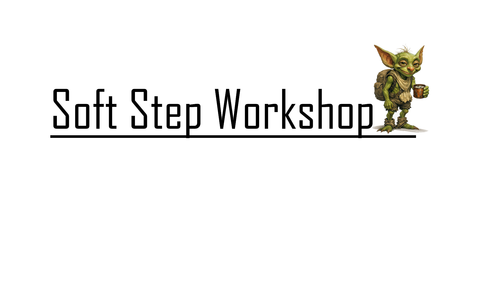

What is Soft Step Workshop?
Soft Step Workshop is a culmination of the childhood influences, gentle stories, and mindfulness teachings that have helped shape me over the years. It’s a personal creative space where I explore calm, atmospheric storytelling through design, writing, and imagination.

A place for stories.
My aim is to publish my fantasy and sci‑fi stories here for free — the only cost being the price of a coffee if you’d like to support the project. Soft Step Workshop is my way of getting the characters out of my head and into yours, inviting you to wander alongside them.
A mindful interactive experience.
These stories are designed to be slow, gentle journeys, accompanied by atmospheric music, subtle animations, and a sense of quiet discovery. It’s storytelling that encourages you to breathe, pause, and immerse yourself in a world built with care.